The resistance associated with each common-mode half circuit is,
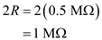
(a)
Calculate the common mode gain for output taken single endedly.
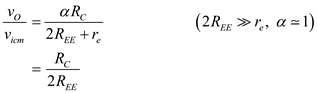
Substitute  for
for  and
and  for
for  .
.
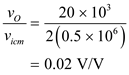
Thus, the common mode gain for output taken single endedly is 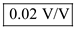.
Draw the half circuit of differential amplifier.
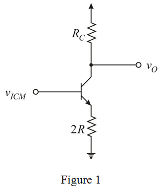
The resistance associated with each common-mode half circuit is,
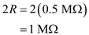
(a)
Calculate the common mode gain for output taken single endedly.
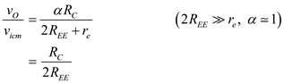
Substitute for and for .
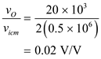
Thus, the common mode gain for output taken single endedly is 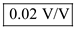.
(b)
Calculate the common-mode gain,  for output taken differentially.
for output taken differentially.
If collector resistance is accurate to within  , the worst case resistor mismatch is
, the worst case resistor mismatch is
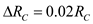.
Substitute 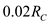 for  ,
, for
for  and 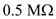 for
and 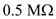 for  .
.
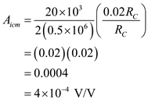
Thus, the common mode gain for output taken differentially is 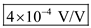.